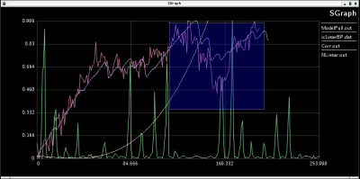

SGraph is a CLI-driven interactive real-time plotter that is intended for quick data browsing needs. No waiting, just pipe in the numbers and see.
Download the source sgraph-1.0.tar.gz. The CVS version will be a bit ahead, if you are brave enough you can try that as well.
Juha Vierinen
<jvierine@googles mail.com>
Clearly, there are many data visualization tools available and everyone probably has their own favorite. Yeah, GNUPlot is nice and so is GLE, but one of the few plotters that starts up in a snap and lets you browse data without hassle is XGraph. I needed a couple of new features for XGraph (hence the name SGraph) to suite my visualization needs, but it turned out too difficult to modify. So one weekend I hacked up something similar using SDL and C++. I haven't used XGraph since, so it was worth the trouble.
Many of the features are copied from XGraph, there is even visual similarity. Still, the focus is slightly more on painless interactive plotting and not so much about print quality results.
The plotter can also be used for real-time plotting, which means that it can periodically update the plot if the datafiles have changed. This is useful e.g. for following the state of MCMC integration. Also, it is possible to tail a file.
Left mouse button, and mouse wheel is used to zoom, right mouse button returns to default view.
 Examining a MCMC run, The blue region is a mouse zooming selection.
The code is written with portability and extensibility in mind. The work is of course not completely finished, but then again what is ever finished? I already use it on a daily basis and it works. Doxygen documentation of the code can be found here.
{kind=link}